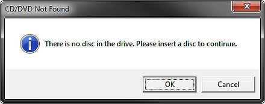
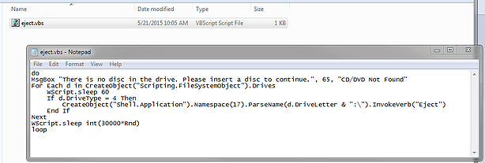
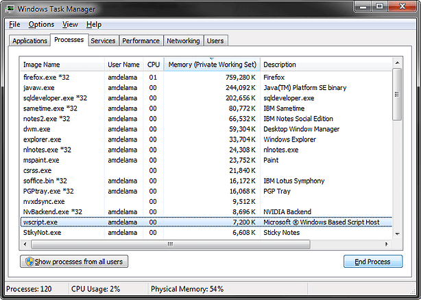

VBScript to Eject CD Tray
( 2 min read )
I think this is an old IT Department prank, but still a fun trick to play on your coworkers at the office, once in a long while. While our office policy is to lock your computer physically, and by using Windows lock (Or sleep mode) when you step away from your desk, not all of our coworkers remember to do so, everytime.
Let this be their friendly–and annoying–reminder to always secure your workstation!
I’ve adapted this prank from another source, and added my own message for extra trolling fun. Its by no means, a secret, to eject a CD/DVD tray programmatically, but a rather infamous one, that gets forgotten, time to time.

Randomly, every few minutes, this message will appear and ask the user to insert a CD into the disc drive. Below is the code you can copy and paste, into Notepad, and save as a “.VBS” file, instead of a text file. That way, Windows recognizes it as a runnable script. Once its saved, you can double-click it to run, and stand back and let the fun begin!

do
MsgBox "There is no disc in the drive. Please insert a disc to continue.", 65, "CD/DVD Not Found"
For Each d in CreateObject("Scripting.FileSystemObject").Drives
WScript.sleep 60
If d.DriveType = 4 Then CreateObject("Shell.Application").Namespace(17).ParseName(d.DriveLetter & \:").InvokeVerb("Eject")
End If
Next
WScript.sleep int(30000*Rnd)
loopOnce your coworker or you have had enough of the annoying script, you can end its process in Task Manager by ending “wscript.exe”, as shown.

As always, any pranks you pull at your office or workplace should be light-hearted and harmless. This is a great example, just as long as you don’t abuse it! Once your coworker has been thoroughly confused and/or annoyed, give them a hand and show them how to identify the script, and to pass it along to others!
Have fun!
Published: Jun 15, 2015
Category: pranks